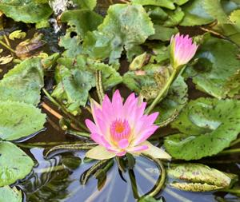
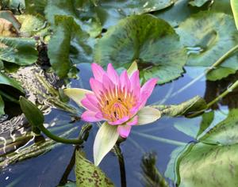

うるがいの話 ある日
最新: 仏壇じまいの後のウンケー【うるがいの話 ある日】とは 一日だけのプログです
『うるがいの話』の最新一日だけのプログで、通信料が少なく経済的だ。カニの画像をクリックすると全ての日付が載る『うるがいの話』サイトを表示します
|
|
【うるがいの話】 うるがい(ｳﾙｶﾞｲ urugai)とは、『もずくがに』の名前でとても大きくなります。 |
|---|---|
|
|
【カミマヤーの話】 猫のことを方言でマヤーといいます。カミマヤー（kamimayaa）とは、神の猫のことです。 |
|
【たながぁの音楽】 たながぁ（ﾀﾅｶﾞｰ tanagaa）とは手長えびのことで、何種類かあり大きいのは車 エビぐらいになります。 |

|
【ぶながぁの話】 ぶながぁ(ﾌﾞﾅｶﾞｰ bunagaa)とは、赤い髪の毛、赤い身体、そして身長は１ｍ２０ｃｍ ぐらい、川の蟹を食べているの目撃された。場所は沖縄県国頭郡大宜味村のと ある村僕の隣近所に住んでいる爺さんから、聞いた話です。 |
|
|
【ギーマの話】 ギーマ(giima)とは、山原の里山に咲くスズランに似た、 花を付けます。実は食べられます、 気が付くと口の周りが紫になっています。 |
2025年09月04日 (木）仏壇じまいの後のウンケー
15:40
ヨメの妹と、お義母さんの妹を車に乗せ納骨堂があるお寺へ９時
４０分に着く。私は、昨日（１７時０５分留守番電話）があった
ので事務所へ行く。いない、受付の人が、５分も待つが、電話も
してみた。すると事務所で電話なる・・・・。仕方なく、事務所
を離れ、皆とウンケーをする。しばらくすると、スマホに電話が
したので、事務所に向かいますと事務所へいく。あの、予約の件
は親戚からいろいろ言われたこともあり、予約はキャンセルしま
す。『保留ということにしますか？』と言われたが、いいえ沢山
の予約があるはずですから、・・。『ええ、予約はかなりありま
す』と話しを済ませた。

納骨堂で、お供え物（果物）をどうするかでもめる。私は、旧盆
でウークイの時に引き上げるだから、いいのではと言ってそのま
まにしたが、事務所で確認するとすべて引き上げてくださいと、
そのままにしている所が、かなりあったが夜には、引き上げると
のこと。こうして、マンションの仏壇じまいの後のウンケーは、
無事終了する。

お寺の睡蓮、まいど綺麗です、家のウンケーは夕方からで、準備
はもう済ませました、暇ですから。